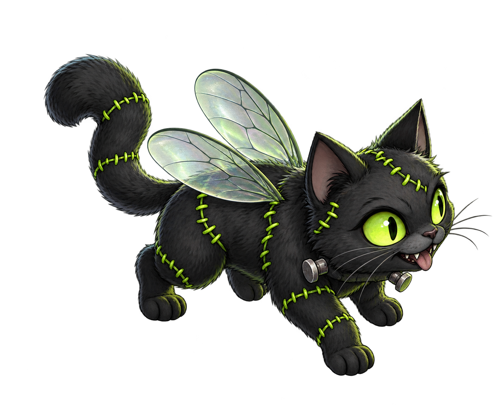

FRUIT-FLY CONNECTOME · VIRTUAL CAT
New body.
Same tiny brain.
Put something in its world.
See what the neurons do.
THE CHAMBER
SESSION 00:00
Connecting the brain…The chamber will open when the connectome is ready.
LAB NOTES
SESSION EVENTS- Waiting for the first observation.
What is real in this experiment?
The wiring comes from the FlyEM male fruit-fly CNS dataset. Neuron dynamics, the ground-plane view and the transformation into cat motion are simplified models. The body is a virtual avatar.
Like the upstream implementation, each short neural observation window starts from rest. World and random-generator state persist; this is not continuous neural memory. Scent is a synthetic input to olfactory neurons, not a validated chemical odor. This version does not train, understand language or reproduce a living cat.
The display samples measured neuron positions; firing counts cover the full model. Brain time and world time run at different scales. Motor readouts are in Hz of simulated time.
Based on flycoinrh · Data: HHMI Janelia FlyEM, Cambridge Connectomics Group and Google Research, CC BY 4.0.